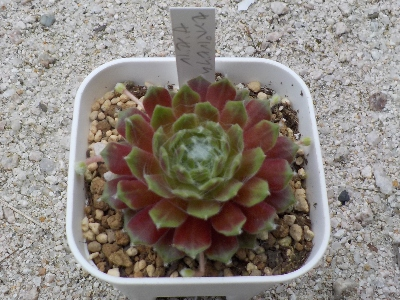
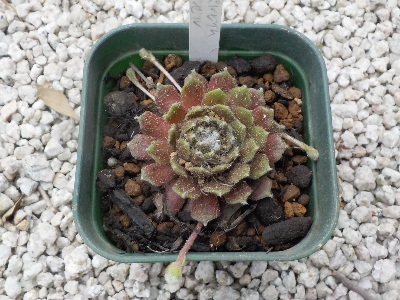

更新日 : 2026/04/13

普通にキレイなので買いました。
調べてみると、赤いのは紅葉してる冬だけみたいですね。なのでこれもそのうち緑だけになるようです。
どれくらいの期間が赤いんでしょうね。
更新日 : 2026/04/22

何にも考えずに砂を上から入れたら、葉っぱが砂まみれになりました。
息を強く吹きかけて落としましたが、ほこりがかかった感じになってしまいました。
植え替えるなら、もっと大きい鉢にした方が簡単で良かったかもしれないです。
寒さに強く増やしやすいそうです。
【おいしいものを食べよう。】【たくさん寝よう。】
【ソロ活をしよう!】【季節感のあることをしよう。】【動画視聴はほどほどに。】【当サイトの全てのコンテンツは無断転載禁止です。】